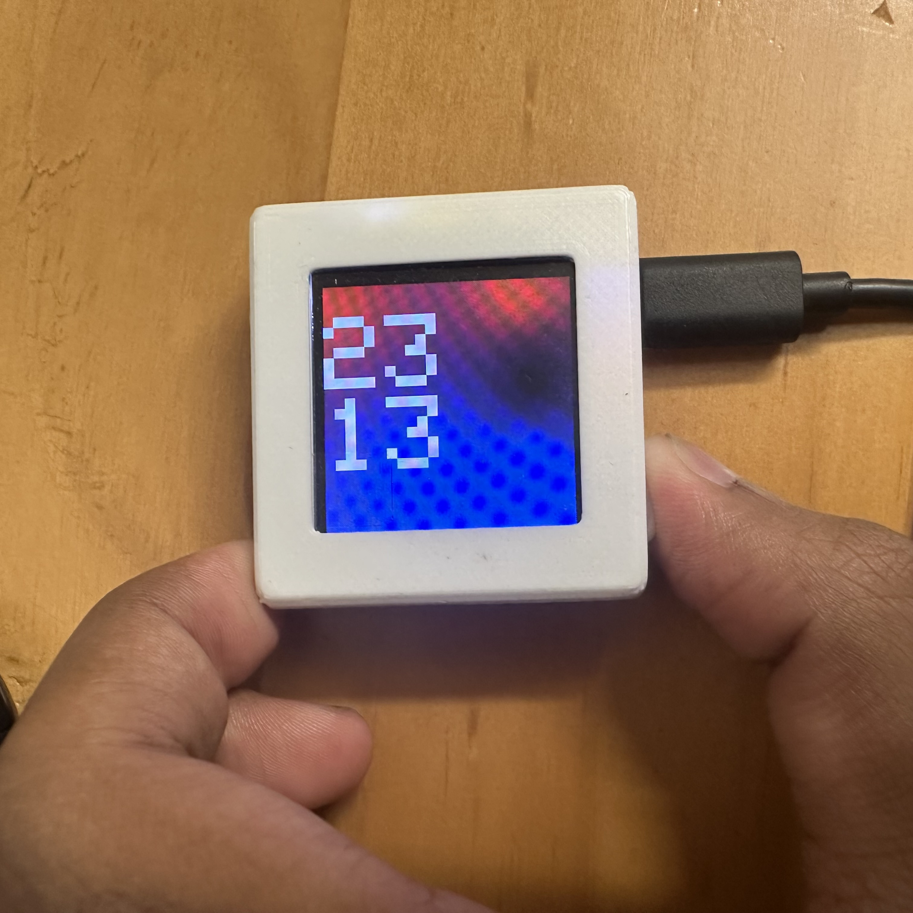

Mini Watch
My desire to make a watch on par with the Apple Watch led me to this project. Did I fulfill my goal? Not quite, but it made me realize the progress in low-cost microcontrollers over the years and opened my eyes to intense amount of engineering and R&D Apple undertakes in order to create the Apple Watch.